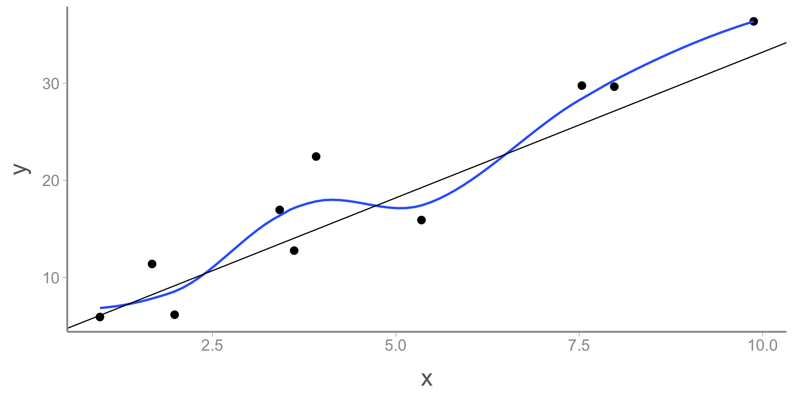
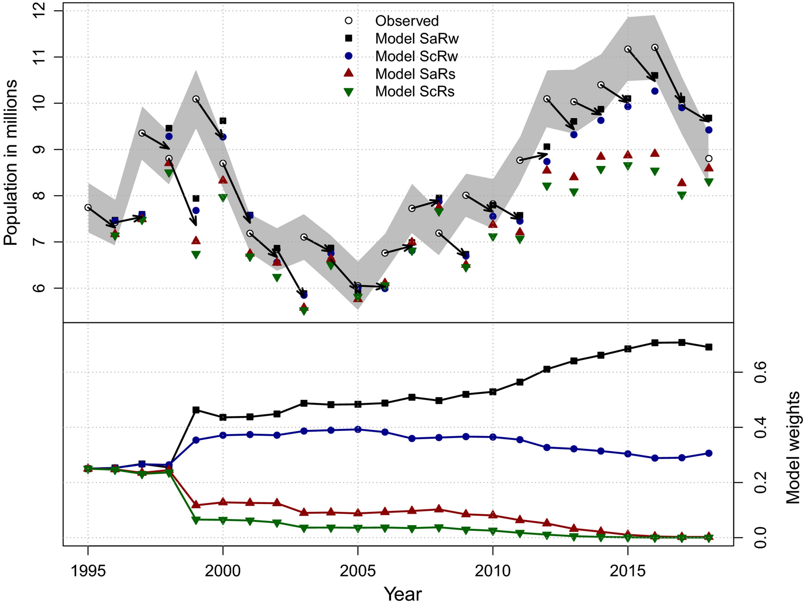

<!DOCTYPE html>
<html lang="en"><head>
<script src="../../site_libs/clipboard/clipboard.min.js"></script>
<script src="../../site_libs/quarto-html/tabby.min.js"></script>
<script src="../../site_libs/quarto-html/popper.min.js"></script>
<script src="../../site_libs/quarto-html/tippy.umd.min.js"></script>
<link href="../../site_libs/quarto-html/tippy.css" rel="stylesheet">
<link href="../../site_libs/quarto-html/light-border.css" rel="stylesheet">
<link href="../../site_libs/quarto-html/quarto-syntax-highlighting-234273d1456647dabc34a594ac50e507.css" rel="stylesheet" id="quarto-text-highlighting-styles"><meta charset="utf-8">
  <meta name="generator" content="quarto-1.7.32">

  <title>FANR6750 – model_selection</title>
  <meta name="apple-mobile-web-app-capable" content="yes">
  <meta name="apple-mobile-web-app-status-bar-style" content="black-translucent">
  <meta name="viewport" content="width=device-width, initial-scale=1.0, maximum-scale=1.0, user-scalable=no, minimal-ui">
  <link rel="stylesheet" href="../../site_libs/revealjs/dist/reset.css">
  <link rel="stylesheet" href="../../site_libs/revealjs/dist/reveal.css">
  <style>
    code{white-space: pre-wrap;}
    span.smallcaps{font-variant: small-caps;}
    div.columns{display: flex; gap: min(4vw, 1.5em);}
    div.column{flex: auto; overflow-x: auto;}
    div.hanging-indent{margin-left: 1.5em; text-indent: -1.5em;}
    ul.task-list{list-style: none;}
    ul.task-list li input[type="checkbox"] {
      width: 0.8em;
      margin: 0 0.8em 0.2em -1em; /* quarto-specific, see https://github.com/quarto-dev/quarto-cli/issues/4556 */ 
      vertical-align: middle;
    }
  </style>
  <link rel="stylesheet" href="../../site_libs/revealjs/dist/theme/quarto-de2f321f334c519abfca5296ca2f67de.css">
  <link href="../../site_libs/revealjs/plugin/quarto-line-highlight/line-highlight.css" rel="stylesheet">
  <link href="../../site_libs/revealjs/plugin/reveal-menu/menu.css" rel="stylesheet">
  <link href="../../site_libs/revealjs/plugin/reveal-menu/quarto-menu.css" rel="stylesheet">
  <link href="../../site_libs/revealjs/plugin/quarto-support/footer.css" rel="stylesheet">
  <style type="text/css">
    .reveal div.sourceCode {
      margin: 0;
      overflow: auto;
    }
    .reveal div.hanging-indent {
      margin-left: 1em;
      text-indent: -1em;
    }
    .reveal .slide:not(.center) {
      height: 100%;
    }
    .reveal .slide.scrollable {
      overflow-y: auto;
    }
    .reveal .footnotes {
      height: 100%;
      overflow-y: auto;
    }
    .reveal .slide .absolute {
      position: absolute;
      display: block;
    }
    .reveal .footnotes ol {
      counter-reset: ol;
      list-style-type: none; 
      margin-left: 0;
    }
    .reveal .footnotes ol li:before {
      counter-increment: ol;
      content: counter(ol) ". "; 
    }
    .reveal .footnotes ol li > p:first-child {
      display: inline-block;
    }
    .reveal .slide ul,
    .reveal .slide ol {
      margin-bottom: 0.5em;
    }
    .reveal .slide ul li,
    .reveal .slide ol li {
      margin-top: 0.4em;
      margin-bottom: 0.2em;
    }
    .reveal .slide ul[role="tablist"] li {
      margin-bottom: 0;
    }
    .reveal .slide ul li > *:first-child,
    .reveal .slide ol li > *:first-child {
      margin-block-start: 0;
    }
    .reveal .slide ul li > *:last-child,
    .reveal .slide ol li > *:last-child {
      margin-block-end: 0;
    }
    .reveal .slide .columns:nth-child(3) {
      margin-block-start: 0.8em;
    }
    .reveal blockquote {
      box-shadow: none;
    }
    .reveal .tippy-content>* {
      margin-top: 0.2em;
      margin-bottom: 0.7em;
    }
    .reveal .tippy-content>*:last-child {
      margin-bottom: 0.2em;
    }
    .reveal .slide > img.stretch.quarto-figure-center,
    .reveal .slide > img.r-stretch.quarto-figure-center {
      display: block;
      margin-left: auto;
      margin-right: auto; 
    }
    .reveal .slide > img.stretch.quarto-figure-left,
    .reveal .slide > img.r-stretch.quarto-figure-left  {
      display: block;
      margin-left: 0;
      margin-right: auto; 
    }
    .reveal .slide > img.stretch.quarto-figure-right,
    .reveal .slide > img.r-stretch.quarto-figure-right  {
      display: block;
      margin-left: auto;
      margin-right: 0; 
    }
  </style>
</head>
<body class="quarto-light">
  <div class="reveal">
    <div class="slides">


<section id="lecture-15-model-selection" class="slide level2 theme-title center">
<h2>LECTURE 15: model selection</h2>
<div class="footer">
<p>FANR 6750<br>
Fall 2026</p>
</div>
</section>
<section id="outline" class="slide level2 theme-inverse smaller">
<h2>Outline</h2>
<h4 id="goals-of-statistical-inference">1) Goals of statistical inference</h4>
<p><br></p>
<div class="fragment">
<h4 id="inference">2) Inference</h4>
<p><br></p>
</div>
<div class="fragment">
<h4 id="exploration">3) Exploration</h4>
<p><br></p>
</div>
<div class="fragment">
<h4 id="prediction">4) Prediction</h4>
<p><br></p>
</div>
<div class="fragment">
<h4 id="aic">5) AIC</h4>
</div>
</section>
<section id="motivation" class="slide level2 smaller">
<h2>Motivation</h2>
<p>As discussed in the previous lecture, one of the main challenges of statistical analyses, especially in observational studies, is choosing which covariates to include in a model</p>
<div class="fragment">
<p><strong>Model selection</strong> is the process of choosing which model is best suited to achieve the objectives of the study</p>
</div>
<div class="fragment">
<p><span class="highlight">Note</span>: Model selection is one of the most highly debated (and confusing) topics we will cover this semester</p>
</div>
</section>
<section id="examples-of-model-selection-approaches" class="slide level2 smaller">
<h2>Examples of model selection approaches</h2>
<p><strong>Comparison of 2 (nested) models</strong><br>
- Likelihood-ratio test</p>
<p><strong>Stepwise procedures</strong><br>
- Forward/backward/stepwise selection</p>
<p><strong>Information-theortic approaches</strong><br>
- Akaike’s Information Criterion (AIC)</p>
<p><strong>Cross-validation</strong><br>
- Leave-one-out<br>
- K-fold</p>
<p><strong>Out-of-sample validation</strong><br>
- Compare predictions to new data</p>
</section>
<section id="questions" class="slide level2 smaller">
<h2>Questions</h2>
<p>To make sense of the various model selection approaches and often conflicting advice around model selection, we need to answer a few questions:</p>
<ul>
<li class="fragment"><p>How do we know which model is best?</p></li>
<li class="fragment"><p>Are any of them any good?</p></li>
<li class="fragment"><p>What even is a “good” model?</p></li>
</ul>
<div class="fragment">
<p>The answers to these questions usually depend on <em>what</em> we want our models to do</p>
</div>
</section>
<section id="goals-of-modeling" class="slide level2 smaller">
<h2>Goals of modeling</h2>
<div class="fragment">
<p><span class="red">Exploration</span></p>
<ul>
<li><p>Identify potential relationships between variables</p></li>
<li><p><strong>Generate</strong> hypotheses</p></li>
</ul>
</div>
<div class="fragment">
<p><span class="red">Inference</span></p>
<ul>
<li><strong>Test</strong> a priori hypotheses</li>
</ul>
</div>
<div class="fragment">
<p><span class="red">Prediction</span></p>
<ul>
<li><strong>Predict</strong> response variable outside of observed data (usually to unobserved locations or future times)</li>
</ul>
</div>
</section>
<section id="approaches-to-model-selection" class="slide level2 smaller">
<h2>Approaches to model selection</h2>
<p>The most appropriate approach to model selection depends on what you want the model to do</p>
<div class="fragment">
<p>The first step in any analysis is to determine your objective (exploration, inference, or prediction)</p>
<ul>
<li><p>Confusion about model selection often comes from not defining a clear objective</p></li>
<li><p>Sometimes the objective will not be obvious</p></li>
</ul>
</div>
</section>
<section id="inference-1" class="slide level2 theme-inverse center">
<h2>Inference</h2>
</section>
<section id="inference-2" class="slide level2 smaller">
<h2>Inference</h2>
<p>Inference is a central objective of science</p>
<div class="fragment">
<p>Inference involves using data to evaluate support for a hypothesis</p>
<p><span class="math display">\[\Large E(y_i) = \beta_0 + \beta_1  x1_i + \beta_2  x2_i\]</span></p>
</div>
<ul>
<li class="fragment"><p>Are coefficients ( <span class="math inline">\(\beta_0\)</span>, <span class="math inline">\(\beta_1\)</span>, <span class="math inline">\(\beta_2\)</span> ) non-zero?</p></li>
<li class="fragment"><p>Are coefficients positive or negative?</p></li>
<li class="fragment"><p>Which covariate ( <span class="math inline">\(x1\)</span> or <span class="math inline">\(x2\)</span> ) has a larger effect on <span class="math inline">\(y\)</span>?</p></li>
<li class="fragment"><p>Does <span class="math inline">\(x1\)</span> have a causal effect on <span class="math inline">\(y\)</span>?</p></li>
</ul>
<div class="fragment">
<p>The concepts we’ve learned this semester regarding null hypothesis testing and causal inference are used for inference</p>
</div>
</section>
<section id="inference-3" class="slide level2 smaller">
<h2>Inference</h2>
<p>For a well-designed study focused on inference, null hypothesis testing from a single model may be sufficient</p>
<ul>
<li class="fragment"><p>As we learned in the last lecture, a well-formed DAG tells you want variables you should include (or exclude) from your model. No model selection necessary!</p></li>
<li class="fragment"><p>The main risk when conducting inference is Type I error</p>
<ul>
<li class="fragment"><p>For any single study/data set, significant results may be to due to sampling error</p></li>
<li class="fragment"><p>As a field, inference is strengthened by replication and validation</p></li>
</ul></li>
<li class="fragment"><p>For a single study, risk of spurious results can be reduced by formulating good hypotheses</p></li>
<li class="fragment"><p>Where do <em>a priori</em> hypotheses come from?</p>
<ul>
<li class="fragment">Theory (ideally) or…</li>
</ul></li>
</ul>
</section>
<section id="exploration-1" class="slide level2 theme-inverse center">
<h2>Exploration</h2>
</section>
<section id="exploration-2" class="slide level2 smaller">
<h2>Exploration</h2>
<p><strong>Exploratory studies are a key part of the scientific process</strong></p>
<ul>
<li class="fragment"><p>Help identify <em>potential</em> relationships between variables</p></li>
<li class="fragment"><p>Particularly common in observational studies with lots of covariates</p></li>
<li class="fragment"><p>e.g., which weather covariates are associated with abundance of wildlife species?</p></li>
</ul>
<div class="fragment">
<p><strong>The main risk for exploratory analyses is detecting spurious relationships</strong></p>
<ul>
<li>Often desirable to “cast a wide net” for potential predictors (don’t want to miss something important), but including more predictors increases risk of Type I error</li>
</ul>
</div>
<div class="fragment">
<p><strong>Part of the <a href="https://www.ncbi.nlm.nih.gov/pmc/articles/PMC1182327/">replication crisis</a> stems from treating exploratory analyses as if they are testing hypotheses</strong></p>
<ul>
<li>Evidence of a relationship should be a treated as a proposed hypothesis, which requires testing via <strong>new</strong> data sets (and ideally causal inference methods)</li>
</ul>
</div>
</section>
<section id="exploration-3" class="slide level2 smaller">
<h2>Exploration</h2>
<p>Key approaches to exploration:</p>
<ul>
<li class="fragment"><p>data visualization</p></li>
<li class="fragment"><p>pairwise correlations</p></li>
<li class="fragment"><p>stepwise model selection</p></li>
<li class="fragment"><p>model fitting + multiple comparisons</p></li>
</ul>
<div class="fragment">
<p>None of these approaches are particularly robust and all carry high risk of detecting spurious relationships</p>
<p>But if the <strong>stated</strong> modeling objective is exploration, that’s not necessarily a problem</p>
<ul>
<li><p>Report all steps used to screen/identify covariates</p></li>
<li><p>Avoid statements that could be interpreted as confirmatory</p></li>
<li><p>Include appropriate caveats and highlight areas for further research</p></li>
</ul>
</div>
</section>
<section id="prediction-1" class="slide level2 theme-inverse center">
<h2>Prediction</h2>
</section>
<section id="prediction-2" class="slide level2 smaller">
<h2>Prediction</h2>
<p>Historically, inference (and exploration) have been the primary focus of ecological research</p>
<ul>
<li><p>Emphasis on null hypothesis testing + very complex systems</p></li>
<li><p>Prediction is more prominent in other fields (meteorology, economics, political science)</p></li>
</ul>
<div class="fragment">
<p>Prediction is increasingly used to:</p>
<ul>
<li><p>Forecast ecological systems (e.g., population viability analysis)</p></li>
<li><p>Test theory</p></li>
<li><p>Aid decision making (e.g., adaptive management)</p></li>
</ul>
</div>
</section>
<section id="prediction-3" class="slide level2 smaller">
<h2>Prediction</h2>
<p><span class="math display">\[\Large E(y_i) = \beta_0 + \beta_1  x1_i + \beta_2  x2_i\]</span></p>
<ul>
<li><p><em>Inference</em> focuses on <span class="math inline">\(\beta_0\)</span>, <span class="math inline">\(\beta_1\)</span>, and <span class="math inline">\(\beta_2\)</span></p></li>
<li><p><em>Prediction</em> focuses on <span class="math inline">\(E(y_i)\)</span></p></li>
</ul>
<div class="fragment">
<p><strong>Question</strong>: Does a model that provides the best predictions also provide the best inference?</p>
</div>
<div class="fragment">
<p><strong>Answer</strong>: No! Because:</p>
<ul>
<li><p>Models that predict well might include many correlated but unimportant covariates</p></li>
<li><p>Models that provide reliable inference may not include covariates relevant to prediction</p></li>
</ul>
</div>
</section>
<section id="prediction-4" class="slide level2 theme-inverse">
<h2>Prediction</h2>
<p><br> <br></p>
<p>In general, we seek models that are as simple as possible (but not more so)</p>
<p><br></p>
<div class="fragment">
<p>Why do we want simplicity?</p>
</div>
</section>
<section id="fit-and-over-fit" class="slide level2 smaller">
<h2>Fit and over-fit</h2>
<p><span class="math inline">\(R^2\)</span> is a measure of model fit - how much variation in the response variable is explained by the predictors?<a href="#/footnotes" class="footnote-ref" id="fnref1" role="doc-noteref" data-footnote-href="#/fn1" onclick=""><sup>1</sup></a></p>
<div class="fragment">
<p><span class="highlight">Questions:</span></p>
<ul>
<li class="fragment"><p>Does the addition of a new predictor variable always increase <span class="math inline">\(R^2\)</span>?</p>
<ul>
<li class="fragment">Yes!</li>
</ul></li>
<li class="fragment"><p>Do we want the model with the highest <span class="math inline">\(R^2\)</span>?</p>
<ul>
<li class="fragment">No!</li>
</ul></li>
<li class="fragment"><p>What is the harm in adding “extra” predictor variables?</p>
<ul>
<li class="fragment">Overly-complicated models don’t predict well. They are too specific to a particular dataset.</li>
</ul></li>
</ul>
</div>
<aside></aside></section>
<section id="fit-and-over-fit-1" class="slide level2 smaller">
<h2>Fit and over-fit</h2>
<p><br></p>

</section>
<section id="prediction-5" class="slide level2 smaller">
<h2>Prediction</h2>
<p>Predictive ability is assessed by comparing <em>predicted</em> values to <em>observed</em> values</p>
<ul>
<li>But we can’t use the same values for both prediction and validation</li>
</ul>
<div class="fragment">
<p>Ideally, we compare predictions to <em>out of sample</em> values</p>
<ul>
<li>Predict future values, gather data, compare values (e.g., <a href="https://onlinelibrary.wiley.com/doi/full/10.1002/ece3.5836">waterfowl management</a>)</li>
</ul>
<div class="cell" data-layout-align="center">
<div class="cell-output-display">
<div class="quarto-figure quarto-figure-center">
<figure>
<p></p>
</figure>
</div>
</div>
</div>
</div>
</section>
<section id="prediction-6" class="slide level2 smaller">
<h2>Prediction</h2>
<p>Predictive ability is assessed by comparing <em>predicted</em> values to <em>observed</em> values</p>
<ul>
<li>But we can’t use the same values for both prediction and validation</li>
</ul>
<p>Ideally, we compare predictions to <em>out of sample</em> values</p>
<ul>
<li><p>Predict future values, gather data, compare values (e.g., <a href="https://onlinelibrary.wiley.com/doi/full/10.1002/ece3.5836">waterfowl management</a>)</p></li>
<li><p>Divide data into “training” and “testing” (possibly repeated multiple times, i.e.&nbsp;<em>cross validation</em>)</p></li>
</ul>
<p>Predictive accuracy can also be approximated using <em>information-theoretic</em> approaches</p>
</section>
<section id="aic-1" class="slide level2 theme-inverse center">
<h2>Aic</h2>
<div class="fragment">
<p>Warning: Dr.&nbsp;Rushing has strong feelings on AIC, which can generally be summarized as:</p>
</div>
<div class="fragment">
<blockquote>
<h3 id="you-probably-shouldnt-be-using-aic"><em>You probably shouldn’t be using AIC</em></h3>
</blockquote>
</div>
</section>
<section id="aic-2" class="slide level2 smaller">
<h2>Aic</h2>
<p><br></p>
<p>Calculating AIC:</p>
<ul>
<li>Negative 2x the (maximized) log-likelihood plus two times the number of parameters</li>
</ul>
<p><span class="math display">\[\Large AIC = -2L(\hat{\theta}, y) + 2K\]</span></p>
<div class="fragment">
<p>The key is to recognize that:</p>
<blockquote>
<p>AIC = measure of fit + complexity penalty</p>
</blockquote>
</div>
<div class="fragment">
<p>AIC is asymtotically equivalent to leave-one-out cross-validation</p>
<ul>
<li>In other words, AIC <span class="highlight">approximates</span> preditive performance</li>
</ul>
</div>
</section>
<section id="aic-in-practice" class="slide level2 smaller">
<h2>Aic in practice</h2>
<ol type="1">
<li class="fragment"><p>Select a set of candidate models</p></li>
<li class="fragment"><p>Fit the models to the data (maximize the likelihood or minimize the RSS)<a href="#/footnotes" class="footnote-ref" id="fnref2" role="doc-noteref" data-footnote-href="#/fn2" onclick=""><sup>2</sup></a></p></li>
<li class="fragment"><p>Compute the AIC of each model</p></li>
<li class="fragment"><p>Rank the models by AIC (lower AIC is better)</p></li>
<li class="fragment"><p>Compute the difference in AIC scores between the best model, and every other model</p>
<ul>
<li class="fragment"><span class="math inline">\(\Delta_i = AIC_i - AIC_{min}\)</span></li>
</ul></li>
<li class="fragment"><p>Compute the Akaike weight of each model<a href="#/footnotes" class="footnote-ref" id="fnref3" role="doc-noteref" data-footnote-href="#/fn3" onclick=""><sup>3</sup></a>:</p>
<ul>
<li class="fragment"><span class="math inline">\(w_i = \frac{e^{-0.5\Delta_i}}{\sum_i e^{-0.5 \Delta_i}}\)</span></li>
</ul></li>
</ol>
<aside></aside></section>
<section id="presentation-of-results" class="slide level2 smaller">
<h2>Presentation of results</h2>
<p><br></p>
<div class="cell" data-layout-align="center">
<div class="cell-output-display">
<table class="caption-top" data-quarto-postprocess="true">
<thead>
<tr class="header">
<th style="text-align: center;" data-quarto-table-cell-role="th">Model</th>
<th style="text-align: center;" data-quarto-table-cell-role="th">RSS</th>
<th style="text-align: center;" data-quarto-table-cell-role="th">K</th>
<th style="text-align: center;" data-quarto-table-cell-role="th">AIC</th>
<th style="text-align: center;" data-quarto-table-cell-role="th">\(\Delta_{AIC}\)</th>
<th style="text-align: center;" data-quarto-table-cell-role="th">w</th>
</tr>
</thead>
<tbody>
<tr class="odd">
<td style="text-align: center;">1</td>
<td style="text-align: center;">300</td>
<td style="text-align: center;">2</td>
<td style="text-align: center;">113.8</td>
<td style="text-align: center;">0.0</td>
<td style="text-align: center;">0.98</td>
</tr>
<tr class="even">
<td style="text-align: center;">2</td>
<td style="text-align: center;">320</td>
<td style="text-align: center;">3</td>
<td style="text-align: center;">122.3</td>
<td style="text-align: center;">8.4</td>
<td style="text-align: center;">0.02</td>
</tr>
<tr class="odd">
<td style="text-align: center;">3</td>
<td style="text-align: center;">330</td>
<td style="text-align: center;">3</td>
<td style="text-align: center;">125.4</td>
<td style="text-align: center;">11.5</td>
<td style="text-align: center;">0.00</td>
</tr>
<tr class="even">
<td style="text-align: center;">4</td>
<td style="text-align: center;">330</td>
<td style="text-align: center;">5</td>
<td style="text-align: center;">129.4</td>
<td style="text-align: center;">15.5</td>
<td style="text-align: center;">0.00</td>
</tr>
</tbody>
</table>
</div>
</div>
</section>
<section id="small-sample-size-adjustment" class="slide level2 smaller">
<h2>Small sample size adjustment</h2>
<p><br> <br></p>
<p><span class="math display">\[\Large AIC_c = n \log(RSS/n) + 2K + \frac{2K(K + 1)}{n - K - 1}\]</span></p>
<div class="fragment">
<p>The last term is the “bias adjustment term” (Notice what happens as <span class="math inline">\(n\)</span> decreases)</p>
</div>
</section>
<section id="notes-about-aic" class="slide level2 smaller">
<h2>Notes about aic</h2>
<ul>
<li class="fragment"><p>AIC is not a test</p>
<ul>
<li class="fragment">AIC <em>does not</em> provide support for/against hypotheses</li>
</ul></li>
<li class="fragment"><p>AIC is a relative measure. You can’t compare models fit to different datasets</p></li>
<li class="fragment"><p>AIC tells you about the <em>relative</em> predictive ability of the model set, not the <em>absolute</em> predictive ability</p>
<ul>
<li class="fragment">There will always be a model with the lowest AIC. But all of the models in the set could be terrible</li>
</ul></li>
<li class="fragment"><p>AIC is more likely to select unimportant covariates than NHST</p>
<ul>
<li class="fragment"><p>Very common to get different conclusions about variable importance between NHST and AIC</p></li>
<li class="fragment"><p>Strong, but spurious, associations will lower AIC scores. AIC <em>does not</em> help guard against Type I error!</p></li>
</ul></li>
<li class="fragment"><p><strong>Avoid mixing NHST and AIC</strong>. Recognizing that they measure different things can help clarify confusion</p></li>
</ul>
</section>
<section id="notes-about-aic-1" class="slide level2 smaller">
<h2>Notes about aic</h2>
<p><span class="highlight">Final note</span>: AIC is a valid statistical tool but is often mis-used/over-used</p>
<ul>
<li class="fragment"><p>If your goals are inferential, you probably shouldn’t use AIC</p></li>
<li class="fragment"><p>Strong <em>a priori</em> hypotheses combined with well-designed experiments generally don’t require complex model selection methods (and should be preferred regardless)</p></li>
<li class="fragment"><p>If your goal is prediction, probably better to measure actual predictive performance (e.g., using cross validation)</p></li>
<li class="fragment"><p>AIC can be useful in certain contexts (e.g., testing alternative distributions in distance sampling models)</p></li>
</ul>
</section>
<section id="summary" class="slide level2 smaller">
<h2>Summary</h2>
<p>The right approach to model selection depends on the goal of your study</p>
<p>If the goal is <span class="highlight">exploration</span>:</p>
<ul>
<li class="fragment"><p>Use an approach that can identify potential relationships and consider adjustments for multiple comparisons</p></li>
<li class="fragment"><p>Recognize that the biggest risk is identifying spurious relationships</p></li>
<li class="fragment"><p>Report your procedures and interpret your results with caution (don’t pretend your testing hypotheses!)</p></li>
</ul>
</section>
<section id="summary-1" class="slide level2 smaller">
<h2>Summary</h2>
<p>The right approach to model selection depends on the goal of your study</p>
<p>If the goal is <span class="highlight">inference</span>:</p>
<ul>
<li class="fragment"><p>Model selection may not be necessary, especially for manipulative experiments</p></li>
<li class="fragment"><p>Be careful about which covariates you include. Formulate model based on strong <em>a priori</em> hypotheses and causal inference methods</p></li>
<li class="fragment"><p>Use null hypothesis testing to judge support for hypothesis. Do not use AIC for inference!</p></li>
<li class="fragment"><p><strong>DO NOT USE THE SAME DATA FOR BOTH EXPLORATION AND INFERENCE</strong></p></li>
</ul>
</section>
<section id="summary-2" class="slide level2 smaller">
<h2>Summary</h2>
<p>The right approach to model selection depends on the goal of your study</p>
<p>If the goal is <span class="highlight">prediction</span>:</p>
<ul>
<li class="fragment"><p>Use model selection approaches meant for prediction (AIC, cross validation)</p></li>
<li class="fragment"><p>Focus on minimizing error</p></li>
<li class="fragment"><p>Be careful when interpreting relationships between response and predictors</p></li>
</ul>
</section>
<section id="looking-ahead" class="slide level2">
<h2>Looking ahead</h2>
<p><br></p>
<p><span class="highlight">Next time</span>: Random effects</p>
<p><br></p>
<p><span class="highlight">Reading</span>: <a href="https://statistics4ecologists-v3.netlify.app/18-linearmixedeffectsmodels#what-are-random-effects-mixed-effect-models-and-when-should-they-be-considered">Fieberg chp. 18.4-18.6</a></p>


</section>
<section id="footnotes" class="footnotes footnotes-end-of-document smaller scrollable" role="doc-endnotes"><h2>Footnotes</h2>

<ol>
<li id="fn1"><p>ALthough we haven’t spent much time on it. <span class="math inline">\(R^2\)</span> is part of the standard output provide by <code>lm()</code> objects</p></li>
<li id="fn2"><p>Don’t worry - R does this for you!</p></li>
<li id="fn3"><p>A model with <span class="math inline">\(w = 0.6\)</span> is twice as likely to be the best model in the set as a model with <span class="math inline">\(w = 0.3\)</span></p></li>
</ol>
</section>
    </div>
  <div class="quarto-auto-generated-content" style="display: none;">
<div class="footer footer-default">

</div>
</div></div>

  <script>window.backupDefine = window.define; window.define = undefined;</script>
  <script src="../../site_libs/revealjs/dist/reveal.js"></script>
  <!-- reveal.js plugins -->
  <script src="../../site_libs/revealjs/plugin/quarto-line-highlight/line-highlight.js"></script>
  <script src="../../site_libs/revealjs/plugin/pdf-export/pdfexport.js"></script>
  <script src="../../site_libs/revealjs/plugin/reveal-menu/menu.js"></script>
  <script src="../../site_libs/revealjs/plugin/reveal-menu/quarto-menu.js"></script>
  <script src="../../site_libs/revealjs/plugin/quarto-support/support.js"></script>
  

  <script src="../../site_libs/revealjs/plugin/notes/notes.js"></script>
  <script src="../../site_libs/revealjs/plugin/search/search.js"></script>
  <script src="../../site_libs/revealjs/plugin/zoom/zoom.js"></script>
  <script src="../../site_libs/revealjs/plugin/math/math.js"></script>
  <script>window.define = window.backupDefine; window.backupDefine = undefined;</script>

  <script>

      // Full list of configuration options available at:
      // https://revealjs.com/config/
      Reveal.initialize({
'controlsAuto': true,
'previewLinksAuto': false,
'pdfSeparateFragments': false,
'autoAnimateEasing': "ease",
'autoAnimateDuration': 1,
'autoAnimateUnmatched': true,
'jumpToSlide': true,
'menu': {"side":"left","useTextContentForMissingTitles":true,"markers":false,"loadIcons":false,"custom":[{"title":"Tools","icon":"<i class=\"fas fa-gear\"></i>","content":"<ul class=\"slide-menu-items\">\n<li class=\"slide-tool-item active\" data-item=\"0\"><a href=\"#\" onclick=\"RevealMenuToolHandlers.fullscreen(event)\"><kbd>f</kbd> Fullscreen</a></li>\n<li class=\"slide-tool-item\" data-item=\"1\"><a href=\"#\" onclick=\"RevealMenuToolHandlers.speakerMode(event)\"><kbd>s</kbd> Speaker View</a></li>\n<li class=\"slide-tool-item\" data-item=\"2\"><a href=\"#\" onclick=\"RevealMenuToolHandlers.overview(event)\"><kbd>o</kbd> Slide Overview</a></li>\n<li class=\"slide-tool-item\" data-item=\"3\"><a href=\"#\" onclick=\"RevealMenuToolHandlers.togglePdfExport(event)\"><kbd>e</kbd> PDF Export Mode</a></li>\n<li class=\"slide-tool-item\" data-item=\"4\"><a href=\"#\" onclick=\"RevealMenuToolHandlers.toggleScrollView(event)\"><kbd>r</kbd> Scroll View Mode</a></li>\n<li class=\"slide-tool-item\" data-item=\"5\"><a href=\"#\" onclick=\"RevealMenuToolHandlers.keyboardHelp(event)\"><kbd>?</kbd> Keyboard Help</a></li>\n</ul>"}],"openButton":true},
'smaller': false,
 
        // Display controls in the bottom right corner
        controls: false,

        // Help the user learn the controls by providing hints, for example by
        // bouncing the down arrow when they first encounter a vertical slide
        controlsTutorial: false,

        // Determines where controls appear, "edges" or "bottom-right"
        controlsLayout: 'edges',

        // Visibility rule for backwards navigation arrows; "faded", "hidden"
        // or "visible"
        controlsBackArrows: 'faded',

        // Display a presentation progress bar
        progress: true,

        // Display the page number of the current slide
        slideNumber: false,

        // 'all', 'print', or 'speaker'
        showSlideNumber: 'all',

        // Add the current slide number to the URL hash so that reloading the
        // page/copying the URL will return you to the same slide
        hash: true,

        // Start with 1 for the hash rather than 0
        hashOneBasedIndex: false,

        // Flags if we should monitor the hash and change slides accordingly
        respondToHashChanges: true,

        // Push each slide change to the browser history
        history: true,

        // Enable keyboard shortcuts for navigation
        keyboard: true,

        // Enable the slide overview mode
        overview: true,

        // Disables the default reveal.js slide layout (scaling and centering)
        // so that you can use custom CSS layout
        disableLayout: false,

        // Vertical centering of slides
        center: false,

        // Enables touch navigation on devices with touch input
        touch: true,

        // Loop the presentation
        loop: false,

        // Change the presentation direction to be RTL
        rtl: false,

        // see https://revealjs.com/vertical-slides/#navigation-mode
        navigationMode: 'linear',

        // Randomizes the order of slides each time the presentation loads
        shuffle: false,

        // Turns fragments on and off globally
        fragments: true,

        // Flags whether to include the current fragment in the URL,
        // so that reloading brings you to the same fragment position
        fragmentInURL: false,

        // Flags if the presentation is running in an embedded mode,
        // i.e. contained within a limited portion of the screen
        embedded: false,

        // Flags if we should show a help overlay when the questionmark
        // key is pressed
        help: true,

        // Flags if it should be possible to pause the presentation (blackout)
        pause: true,

        // Flags if speaker notes should be visible to all viewers
        showNotes: false,

        // Global override for autoplaying embedded media (null/true/false)
        autoPlayMedia: null,

        // Global override for preloading lazy-loaded iframes (null/true/false)
        preloadIframes: null,

        // Number of milliseconds between automatically proceeding to the
        // next slide, disabled when set to 0, this value can be overwritten
        // by using a data-autoslide attribute on your slides
        autoSlide: 0,

        // Stop auto-sliding after user input
        autoSlideStoppable: true,

        // Use this method for navigation when auto-sliding
        autoSlideMethod: null,

        // Specify the average time in seconds that you think you will spend
        // presenting each slide. This is used to show a pacing timer in the
        // speaker view
        defaultTiming: null,

        // Enable slide navigation via mouse wheel
        mouseWheel: false,

        // The display mode that will be used to show slides
        display: 'block',

        // Hide cursor if inactive
        hideInactiveCursor: true,

        // Time before the cursor is hidden (in ms)
        hideCursorTime: 5000,

        // Opens links in an iframe preview overlay
        previewLinks: false,

        // Transition style (none/fade/slide/convex/concave/zoom)
        transition: 'none',

        // Transition speed (default/fast/slow)
        transitionSpeed: 'default',

        // Transition style for full page slide backgrounds
        // (none/fade/slide/convex/concave/zoom)
        backgroundTransition: 'none',

        // Number of slides away from the current that are visible
        viewDistance: 3,

        // Number of slides away from the current that are visible on mobile
        // devices. It is advisable to set this to a lower number than
        // viewDistance in order to save resources.
        mobileViewDistance: 2,

        // The "normal" size of the presentation, aspect ratio will be preserved
        // when the presentation is scaled to fit different resolutions. Can be
        // specified using percentage units.
        width: 1050,

        height: 700,

        // Factor of the display size that should remain empty around the content
        margin: 0.1,

        math: {
          mathjax: 'https://cdnjs.cloudflare.com/ajax/libs/mathjax/2.7.9/MathJax.js',
          config: 'TeX-AMS_HTML-full',
          tex2jax: {
            inlineMath: [['\\(','\\)']],
            displayMath: [['\\[','\\]']],
            balanceBraces: true,
            processEscapes: false,
            processRefs: true,
            processEnvironments: true,
            preview: 'TeX',
            skipTags: ['script','noscript','style','textarea','pre','code'],
            ignoreClass: 'tex2jax_ignore',
            processClass: 'tex2jax_process'
          },
        },

        // reveal.js plugins
        plugins: [QuartoLineHighlight, PdfExport, RevealMenu, QuartoSupport,

          RevealMath,
          RevealNotes,
          RevealSearch,
          RevealZoom
        ]
      });
    </script>
    
    <script>
      // htmlwidgets need to know to resize themselves when slides are shown/hidden.
      // Fire the "slideenter" event (handled by htmlwidgets.js) when the current
      // slide changes (different for each slide format).
      (function () {
        // dispatch for htmlwidgets
        function fireSlideEnter() {
          const event = window.document.createEvent("Event");
          event.initEvent("slideenter", true, true);
          window.document.dispatchEvent(event);
        }

        function fireSlideChanged(previousSlide, currentSlide) {
          fireSlideEnter();

          // dispatch for shiny
          if (window.jQuery) {
            if (previousSlide) {
              window.jQuery(previousSlide).trigger("hidden");
            }
            if (currentSlide) {
              window.jQuery(currentSlide).trigger("shown");
            }
          }
        }

        // hookup for slidy
        if (window.w3c_slidy) {
          window.w3c_slidy.add_observer(function (slide_num) {
            // slide_num starts at position 1
            fireSlideChanged(null, w3c_slidy.slides[slide_num - 1]);
          });
        }

      })();
    </script>

    <script id="quarto-html-after-body" type="application/javascript">
      window.document.addEventListener("DOMContentLoaded", function (event) {
        const tabsets =  window.document.querySelectorAll(".panel-tabset-tabby")
        tabsets.forEach(function(tabset) {
          const tabby = new Tabby('#' + tabset.id);
        });
        const isCodeAnnotation = (el) => {
          for (const clz of el.classList) {
            if (clz.startsWith('code-annotation-')) {                     
              return true;
            }
          }
          return false;
        }
        const onCopySuccess = function(e) {
          // button target
          const button = e.trigger;
          // don't keep focus
          button.blur();
          // flash "checked"
          button.classList.add('code-copy-button-checked');
          var currentTitle = button.getAttribute("title");
          button.setAttribute("title", "Copied!");
          let tooltip;
          if (window.bootstrap) {
            button.setAttribute("data-bs-toggle", "tooltip");
            button.setAttribute("data-bs-placement", "left");
            button.setAttribute("data-bs-title", "Copied!");
            tooltip = new bootstrap.Tooltip(button, 
              { trigger: "manual", 
                customClass: "code-copy-button-tooltip",
                offset: [0, -8]});
            tooltip.show();    
          }
          setTimeout(function() {
            if (tooltip) {
              tooltip.hide();
              button.removeAttribute("data-bs-title");
              button.removeAttribute("data-bs-toggle");
              button.removeAttribute("data-bs-placement");
            }
            button.setAttribute("title", currentTitle);
            button.classList.remove('code-copy-button-checked');
          }, 1000);
          // clear code selection
          e.clearSelection();
        }
        const getTextToCopy = function(trigger) {
            const codeEl = trigger.previousElementSibling.cloneNode(true);
            for (const childEl of codeEl.children) {
              if (isCodeAnnotation(childEl)) {
                childEl.remove();
              }
            }
            return codeEl.innerText;
        }
        const clipboard = new window.ClipboardJS('.code-copy-button:not([data-in-quarto-modal])', {
          text: getTextToCopy
        });
        clipboard.on('success', onCopySuccess);
        if (window.document.getElementById('quarto-embedded-source-code-modal')) {
          const clipboardModal = new window.ClipboardJS('.code-copy-button[data-in-quarto-modal]', {
            text: getTextToCopy,
            container: window.document.getElementById('quarto-embedded-source-code-modal')
          });
          clipboardModal.on('success', onCopySuccess);
        }
          var localhostRegex = new RegExp(/^(?:http|https):\/\/localhost\:?[0-9]*\//);
          var mailtoRegex = new RegExp(/^mailto:/);
            var filterRegex = new RegExp("https:\/\/rushinglab\.github\.io\/FANR6750\/");
          var isInternal = (href) => {
              return filterRegex.test(href) || localhostRegex.test(href) || mailtoRegex.test(href);
          }
          // Inspect non-navigation links and adorn them if external
         var links = window.document.querySelectorAll('a[href]:not(.nav-link):not(.navbar-brand):not(.toc-action):not(.sidebar-link):not(.sidebar-item-toggle):not(.pagination-link):not(.no-external):not([aria-hidden]):not(.dropdown-item):not(.quarto-navigation-tool):not(.about-link)');
          for (var i=0; i<links.length; i++) {
            const link = links[i];
            if (!isInternal(link.href)) {
              // undo the damage that might have been done by quarto-nav.js in the case of
              // links that we want to consider external
              if (link.dataset.originalHref !== undefined) {
                link.href = link.dataset.originalHref;
              }
            }
          }
        function tippyHover(el, contentFn, onTriggerFn, onUntriggerFn) {
          const config = {
            allowHTML: true,
            maxWidth: 500,
            delay: 100,
            arrow: false,
            appendTo: function(el) {
                return el.closest('section.slide') || el.parentElement;
            },
            interactive: true,
            interactiveBorder: 10,
            theme: 'light-border',
            placement: 'bottom-start',
          };
          if (contentFn) {
            config.content = contentFn;
          }
          if (onTriggerFn) {
            config.onTrigger = onTriggerFn;
          }
          if (onUntriggerFn) {
            config.onUntrigger = onUntriggerFn;
          }
            config['offset'] = [0,0];
            config['maxWidth'] = 700;
          window.tippy(el, config); 
        }
        const noterefs = window.document.querySelectorAll('a[role="doc-noteref"]');
        for (var i=0; i<noterefs.length; i++) {
          const ref = noterefs[i];
          tippyHover(ref, function() {
            // use id or data attribute instead here
            let href = ref.getAttribute('data-footnote-href') || ref.getAttribute('href');
            try { href = new URL(href).hash; } catch {}
            const id = href.replace(/^#\/?/, "");
            const note = window.document.getElementById(id);
            if (note) {
              return note.innerHTML;
            } else {
              return "";
            }
          });
        }
        const findCites = (el) => {
          const parentEl = el.parentElement;
          if (parentEl) {
            const cites = parentEl.dataset.cites;
            if (cites) {
              return {
                el,
                cites: cites.split(' ')
              };
            } else {
              return findCites(el.parentElement)
            }
          } else {
            return undefined;
          }
        };
        var bibliorefs = window.document.querySelectorAll('a[role="doc-biblioref"]');
        for (var i=0; i<bibliorefs.length; i++) {
          const ref = bibliorefs[i];
          const citeInfo = findCites(ref);
          if (citeInfo) {
            tippyHover(citeInfo.el, function() {
              var popup = window.document.createElement('div');
              citeInfo.cites.forEach(function(cite) {
                var citeDiv = window.document.createElement('div');
                citeDiv.classList.add('hanging-indent');
                citeDiv.classList.add('csl-entry');
                var biblioDiv = window.document.getElementById('ref-' + cite);
                if (biblioDiv) {
                  citeDiv.innerHTML = biblioDiv.innerHTML;
                }
                popup.appendChild(citeDiv);
              });
              return popup.innerHTML;
            });
          }
        }
      });
      </script>
    

</body></html>